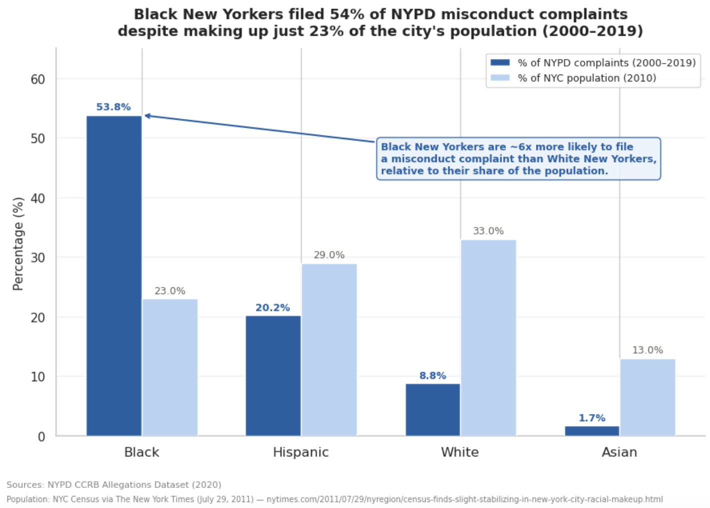
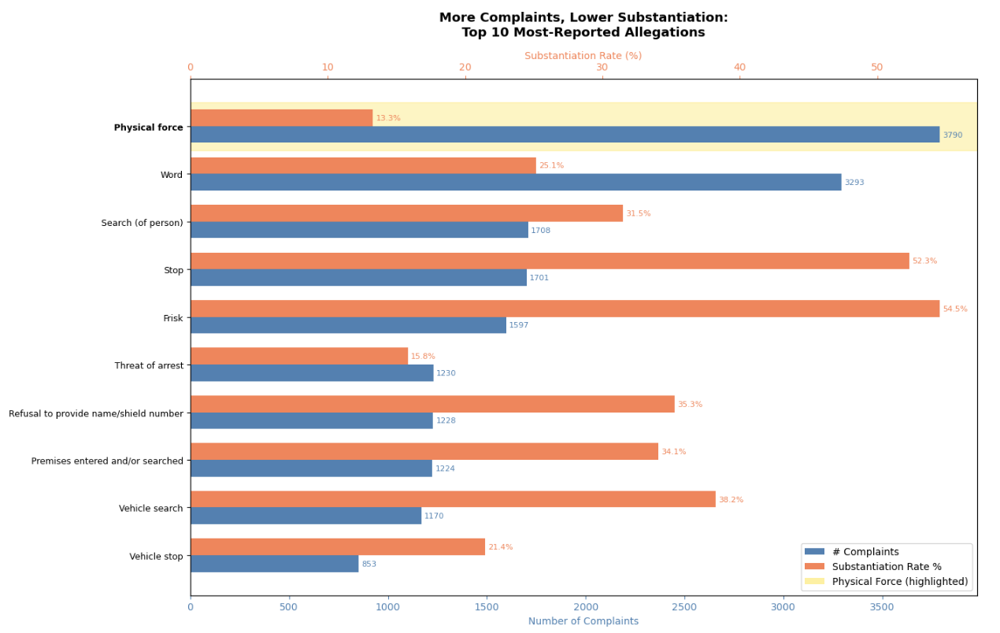

Proposition: Black New Yorkers are disproportionately targeted by NYPD misconduct and are forced to file complaints at rates far exceeding their share of the city's population.
FOR the Proposition

Design Decisions and Rationale:
- Score: 1.5 Filtering the years 2000-2019 Limiting the data to 2000–2019 removes the sparse early years (1985–1999) where complaint recording was inconsistent and incomplete. The year 2020 only had 4 records so there was no need to include it. This makes the comparison cleaner and more defensible. The tradeoff is that it could be seen as cherry-picking, but the date range is well justified by data quality rather than by what numbers it produces.
- Score: 2 Side by side grouped bars Placing complaint percentage and population percentage directly next to each other for each racial group makes the disproportion immediately readable without any manipulation. The gap between Black complaint share (53.8%) and population share (23%) is visually undeniable. We considered a pie chart or stacked bar but landed on grouped bars because they allow direct comparison, which is the whole point of the chart.
- Score: 2 Y-axis starting at 0 The axis runs from 0% to 65%, giving an honest baseline. This was a deliberate choice given that there was no reason to truncate since the data is compelling enough on its own.
- Score: 1 Title framing The title interprets the chart, using the word "despite" to frame the disproportion as something that demands explanation. This is persuasive but not dishonest since the numbers in the chart back it up exactly. We considered a more neutral title like "Complaint share vs. population share by race" but that would have weakened. The slight deduction is because "just 23%" editorializes a little, as a fully neutral title wouldn't use the word "just”.
AGAINST the Proposition

Design Decisions and Rationale:
- Score: −1.5 Dual Axis for Number of Complaints and Substantiation rates Earlier, we had two side by side bar charts for number of complaints and substantiation rates, but we felt that combining them would emphasize how some allegations had high counts, but lower substantiation rates (Physical force in particular). We put these graphs together by using two axis. However, it is deceptive since these two axis aren’t very comparable, the bar for number of complaints being longer than the bar for substantiation rates doesn’t really mean anything but the axis makes you infer a meaningful difference.
- Score: 0.5 Taking the top 20 most reported allegations We took the most common complaints to push the idea that many of complaints are unsubstantiated. For such a visualization it makes sense to do an ordering by number of complaints, but it does serve the narrative of the visualization and doesn’t give the full context of all the allegations.
- Score 1.5 Filtering only Black complainants Since our proposition is on black citizens in NYC, it makes sense to focus on that in our visualization. Though, it also causes a lack of context for if it is normal for the allegation with the highest occurrences to have lower substantiation rates across all ethnicities. We did decide to use only black complainants since it would not be addressing our proposition otherwise.
- Score: −1 Use of Raw Complaint counts Using Raw complaint counts emphasizes that a few allegations are made the most, like physical force, but also have low substantiation rates. If we had used the percentage of complaints for these, the bars would not vary as much, since the complaints are actually well spread out. We wanted there to be variance in the bar lengths so we went with raw counts.
Final Reflection